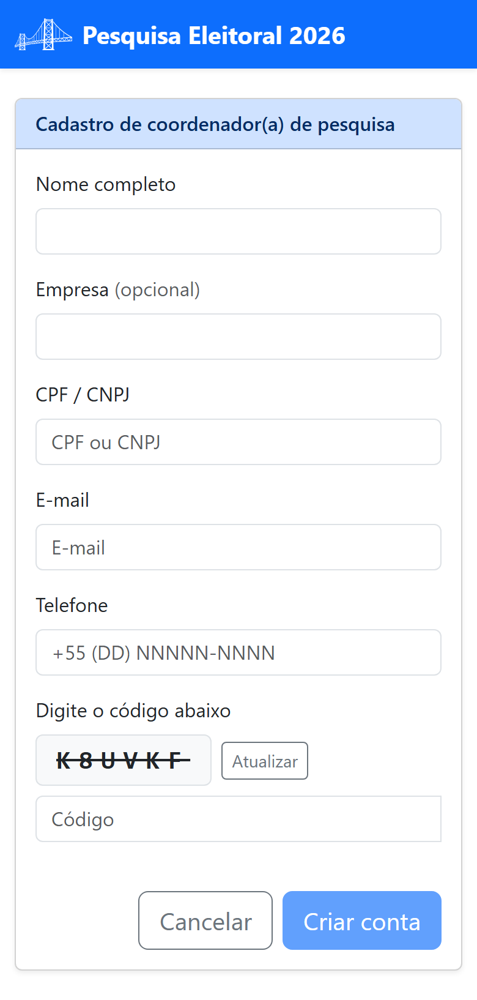
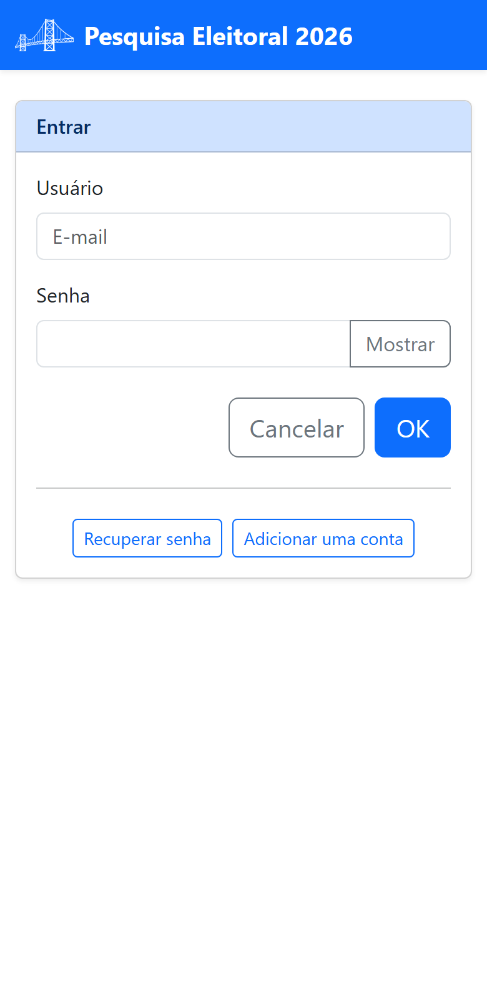
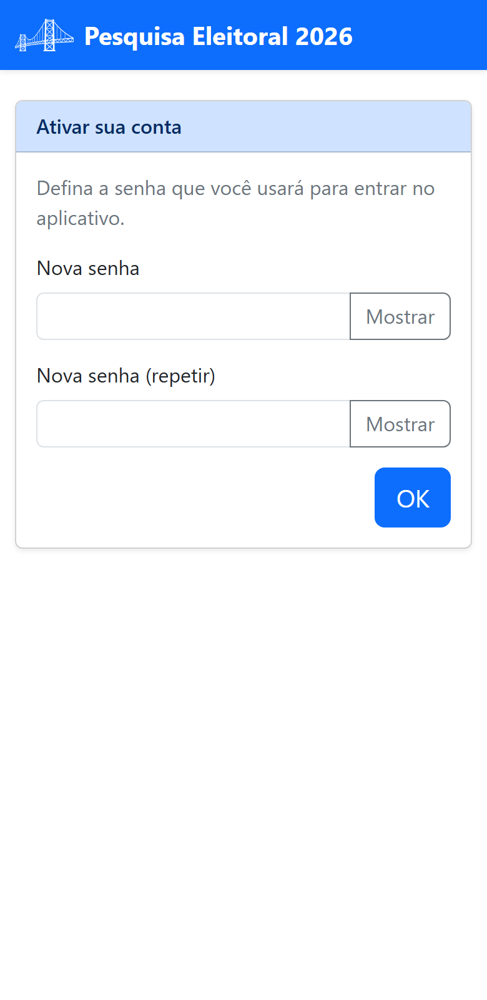

Parte 1 — Acesso
2. Obter acesso e entrar
Para passar a ter uma conta de coordenador(a), você cria você mesmo(a) a sua conta. Em seguida, você entra no aplicativo (login) e define a sua senha pessoal.
2.1 Criar a sua conta
Na tela de entrada, toque em Adicionar uma conta. Abre-se o Cadastro de coordenador(a) de pesquisa:

- Preencha Nome completo, Empresa (opcional), CPF / CNPJ, E-mail e Telefone.
- Confirme o código de verificação (captcha) exibido na tela.
- Toque em Criar conta.
O aplicativo envia uma senha provisória para o seu e-mail. Se a conta não for acessada nas próximas 12 horas, ela é excluída — por isso, entre logo após o cadastro.
2.2 Entrar no aplicativo (login)
Abra o endereço do aplicativo. Você verá a tela Entrar:

- No campo Usuário, digite o seu e-mail.
- No campo Senha, digite a senha (na primeira vez, a senha provisória do e-mail). Toque em Mostrar para conferir o que digitou.
- Toque em OK.
2.3 Primeiro acesso: definir a sua senha
No primeiro acesso, o aplicativo pede que você troque a senha provisória por uma senha só sua:

- Senha atual: a senha provisória que veio no e-mail;
- Nova senha e Nova senha (repetir): a senha que você passará a usar.
Toque em OK. A partir daí, entre sempre com a sua nova senha.
2.4 Esqueci a senha
Na tela de login, toque em Recuperar senha, informe o seu e-mail e toque em OK. O aplicativo envia uma nova senha para o e-mail cadastrado.
2.5 Trocar a senha ou editar seus dados
Já dentro do aplicativo, no menu do topo da tela de boas-vindas, use Editar dados do(a) coordenador(a) de pesquisa. Lá você atualiza seus dados de cadastro e, pelo botão Alterar senha, troca a senha quando quiser.
Ao terminar, use sempre Sair (no menu do topo) para encerrar a sessão com segurança — especialmente em aparelhos compartilhados.